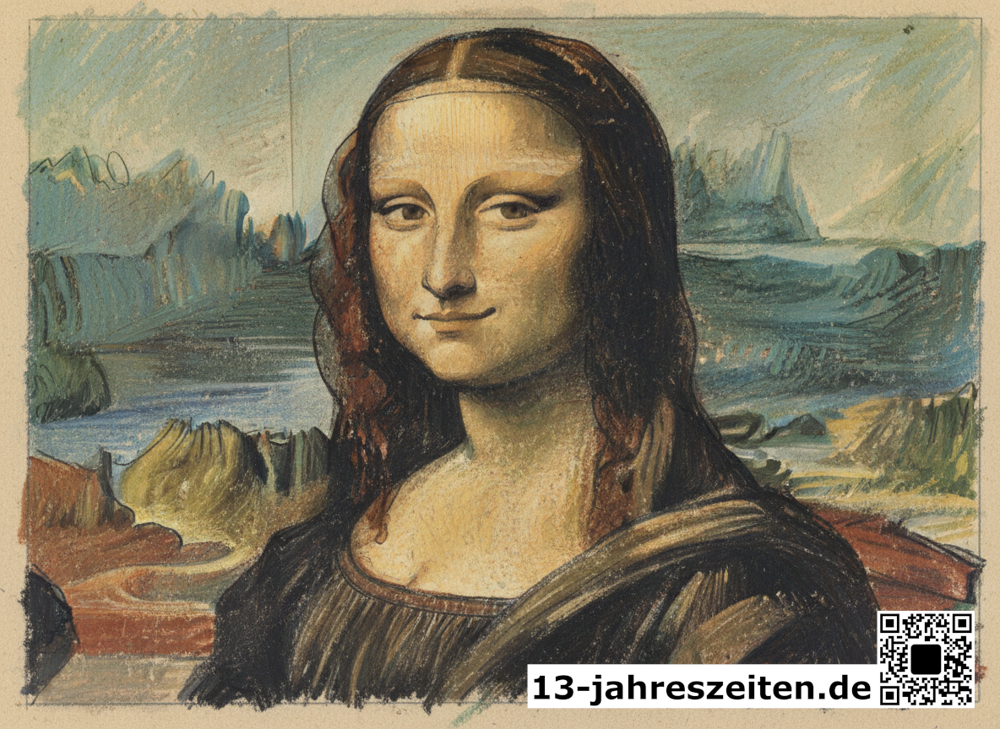

Über das Projekt
13 Jahreszeiten bespielt das Jahr mit dreizehn Kunstepochen. Alle vier Wochen wechselt ein großformatiges Kunstwerk an der Hauswand in der Fußgängerzone Königswinters — sichtbar für alle, die vorbeigehen. Der QR-Code auf jedem Banner führt hierher. Das Projekt verbindet Kunst mit Alltag, Museum mit Straße.
Frühere Saisonen
 Saison 05
Waldlichtung
Saison 05
Waldlichtung
 Saison 06
Guitar
Saison 06
Guitar

Saison 07 Mona Lisa